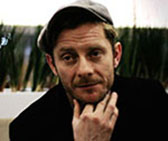

Gorillaz es un grupo británico creado en 1998 por Damon Albarn y Jamie Hewlett, una banda virtual de rock alternativo conformada por cuatro personajes ficticios de dibujos animados. La banda virtual que representa al proyecto fue creada por Jamie Hewlett en Essex, Inglaterra. Los cuatro miembros ficticios de la banda son 2-D, Noodle, Murdoc Niccals y Russel Hobbs. La mayoría de sus canciones vienen acompañadas de vídeos musicales animados, en 3D 2D, estos vídeos suelen tener una trama y un orden cronológico entre ellos.
Leer masMiembros
-
Damon Albarn
Cantante y músico británico que se hizo famoso por ser la voz principal de la banda Blur que formó en 1989 junto a Graham Coxon, Alex James y Dave Rowntree. Albarn cuenta con varios proyectos paralelos a Blur, como su trabajo solista, que comenzó en 2002, y la formación de la banda virtual Gorillaz con Jamie Hewlett, que también adquirió fama instantáneamente a mediados de 2001.
-
Jamie Hewlett
Historietista y diseñador británico, es más conocido por ser el cocreador del cómic Tank Girl y cofundador de la banda Gorillaz. se muda a un apartamento junto a Damon Albarn de la banda Blur, después de terminar este con su novia Justine Frischmann (miembro original de Elástica) y mientras compartían el apartamento concibieron la idea de crear Gorillaz, la primera banda virtual. Albarn trabajaría en la música, mientras Hewlett trabajaría en el diseño de los personajes, y ambos tuvieron ideas para los miembros de la banda.
Personajes Ficticios
Discografía
-
Gorillaz (2001)
-
Laika Come Home (2002)
-
Demon Days (2005)
-
D-Side [SE] (2007)
-
Plastic Beach (2010)
-
The Fall (2010)
-
Humanz [Deluxe] (2017)